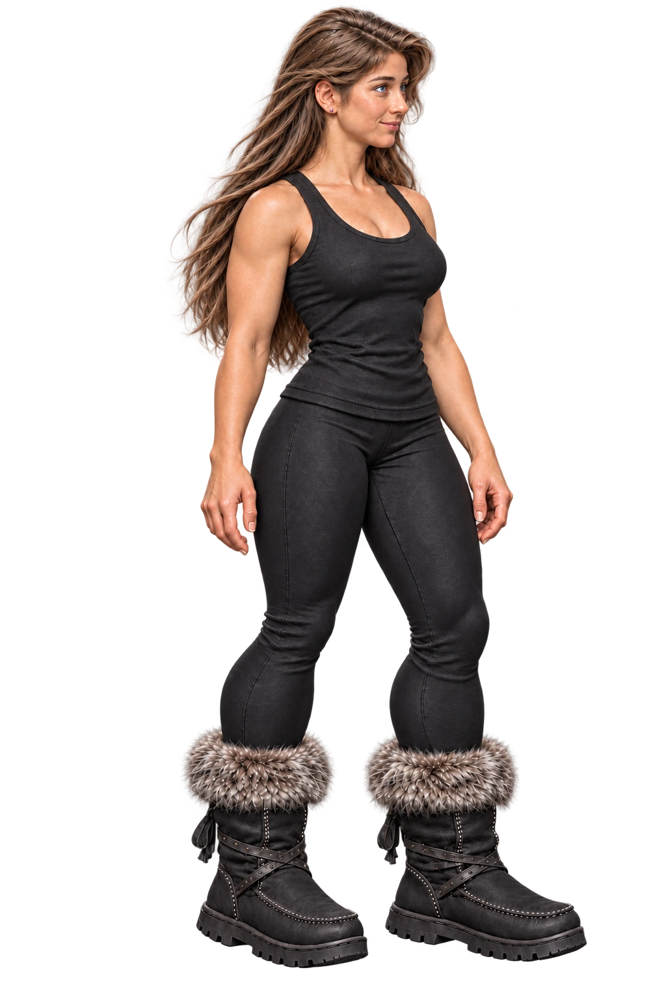

Four friends. One refined S. Eight animal forms. Poor supervision.
CASE
Creature Chaos
Swap people, transform forms, and determine why everyone is suddenly floating in space.

Playable S+ duplicate
Face and hair refinement
The approved S portrait stays in its original roster slot. This separate S+ version is selectable during play and uses S's existing movement art.
- Aligned blue eyes, very thin short brows, and a softer expression
- Defined, subtly tapered ear with the star and purple gem on the lobe
- Natural hairline and part, flatter crown, and animation-ready locks
- Softly fuller hands with more visible fingernails

New playable S++ duplicate
Face, hair and proportion refinement
S and S+ remain preserved. S++ now uses this refined portrait and keeps S's existing movement art.
- Proportionate curved hairline, flatter crown, and flowing loose strands with the signature sweep preserved
- Aligned gaze, slim tapered nose, and a thinner upper lip with a slight smile
- Longer, fuller torso; paw prints kept in place; crow tattoo moved to the viewer-left forearm
- Delicate hands with defined nails, slimmer knee-to-ankle proportions, and bare feet
Future transformations
Coming later
Aquatic forms
Mythical forms
Starting form
C
CHuman form
0 / 4cosmic sparks
Incident contained-ish
Picnic recovered.
Everyone survived. The property value did not.